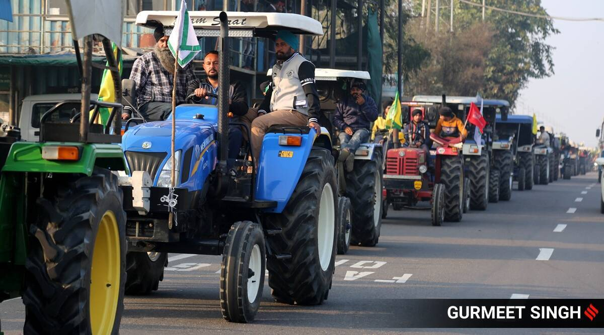
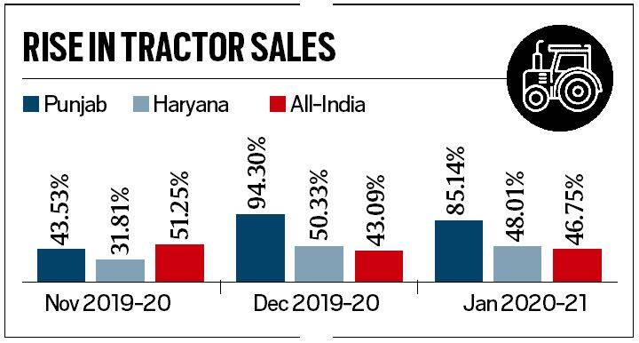

Police tie tractor sales to farm protest: Spurt began much earlier
The Delhi Police has pointed out that tractor sales growth, year-on-year, in Punjab were 43.53 per cent in November, 94.30 per cent in December and 85.13 per cent in January, while in Haryana, the growth figures stood at 31.81 per cent, 50.32 per cent and 48 per cent for the same months.
A seemingly unusual jump in tractor sales in Punjab and Haryana during November 2020-January 2021 has been cited by the Delhi Police as proof of a “ well-orchestrated conspiracy ” behind the protests against the Centre’s three farm laws.
The Delhi Police has pointed out that tractor sales growth, year-on-year, in Punjab were 43.53 per cent in November, 94.30 per cent in December and 85.13 per cent in January, while in Haryana, the growth figures stood at 31.81 per cent, 50.32 per cent and 48 per cent for the same months.
But data from the Tractor and Mechanisation Association (TMA), whose figures the Delhi Police has cited, also show a similar high year-on-year sales growth trend across India — at 51.25 per cent in November, 43.09 per cent in December and 46.75 per cent in January.
What is more, the spurt in sales started in May 2020 (before the farm protests took off) and continued right till April this year (well past the peak of the protests in November to February).
That the high tractor sales growth has little to do with the anti-farm laws agitation is also borne out by the fact that Punjab and Haryana account for barely 7 per cent of all-India tractor sales. Out of the total 8.8 lakh units sold during 2019-20, Punjab’s share was just 21,399 and Haryana’s at 38,705. These were well behind Uttar Pradesh (1.21 lakh), Madhya Pradesh (87,621), Rajasthan (68,563), Maharashtra (61,871), Gujarat (55,411) and Bihar (43,246).
The reason for the higher growth, in percentage terms, in tractor sales in Punjab and Haryana during December 2020 and January 2021, is the low base in the corresponding months of the financial year 2019-20 for both states. In absolute terms, the sale of tractors increased by only 745 in Punjab and 774 in Haryana against the all-India increase of 18,443 during December 2020. In January 2021, too, the absolute increase in tractor sales in Punjab and Haryana was just 1,306 and 1,265 against an all-India increase of 24,958.
Even during the three “conspiracy” months of November 2020-January 2021, the total tractor sales of Punjab and Haryana, at 15,670, were only 7 per cent of the corresponding all-India figure of 2,21,924 for the same period.
What then explains the spike in tractor sales, on a pan-India basis, from last June? There are three likely reasons.
The first is the good monsoons that produced back-to-back bumper harvests during the rabi 2020 season (April-June), kharif 2020 (October-December) and rabi 2021 (April-June). In fact, Agriculture, Fishing and Forestry was the only sector that achieved a positive growth rate of 3.6% in financial year 2020-21.
The second possible reason for the high tractor sales is that all agriculture-related activities were exempted from government lockdown restrictions, both in the first and second wave of Covid-19. Farmers could, therefore, take advantage of the excellent monsoon rains to both produce as well as harvest their record foodgrain and other crops.
The third was government procurement. During the post-lockdown period, government agencies bought record/massive quantities of not just wheat and paddy, but also cotton, rapeseed-mustard and pulses.
For instance, around 433.44 lakh metric tonnes wheat was procured for rabi marketing season 2021-22, against 389.93 LMT being procured in the previous year, benefiting about 49.20 lakh farmers.
All these three factors resulted in higher farm incomes and it is likely that the money earned was spent, among other things, on buying tractors. And this happened not only in Punjab and Haryana, but also other states where there have hardly been any farmer protests.
The TMA data show that after registering a decline in the months of March and April in 2020, the sales of tractors picked up from May last year, when 60,441 tractors were sold – 4.05% higher than 58,091 in the same month of 2019. The growth in tractor sales across the country continued till April this year when it recorded a whopping 436.25% increase – 63,422 in April this year over a low base of 11,827 in the same month last year. However, in May this year, sales declined by 7.99 per cent. In the following two months, June (18.85 per cent) and July (3.25 per cent), the growth remained positive but in August (-17.01 per cent), it again entered into the negative territory.
Sign up for the latest news and updates from Delhi-NCR in your inbox, daily
üì£ The Indian Express is now on Telegram. Click here to join our channel (@indianexpress) and stay updated with the latest headlines
For all the latest Delhi News , download Indian Express App.